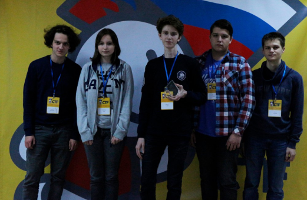

CTF (Capture the Flag) – это соревнования в форме командной игры, главная цель которой – захватить «флаг» у соперника в приближенных к реальности условиям. Соревнование «Север» в области информационной безопасности является одним из самых молодых и перспективных мероприятий в России

Как проходит турнир
Команды решают прикладные задачи, чтобы получить уникальную комбинацию символов (флаг). Далее участники отправляют флаг в специальную платформу и получают подтверждение, что задача решена верно или стоит попытаться ещё раз.
Для кого турнир
Мероприятие направленно на выявление и поддержку учащихся 5-8 классов, заинтересованных в информационной безопасности. Олимпиада по данному профилю предусматривает оценку уровня знаний по различным областям информационной безопасности.